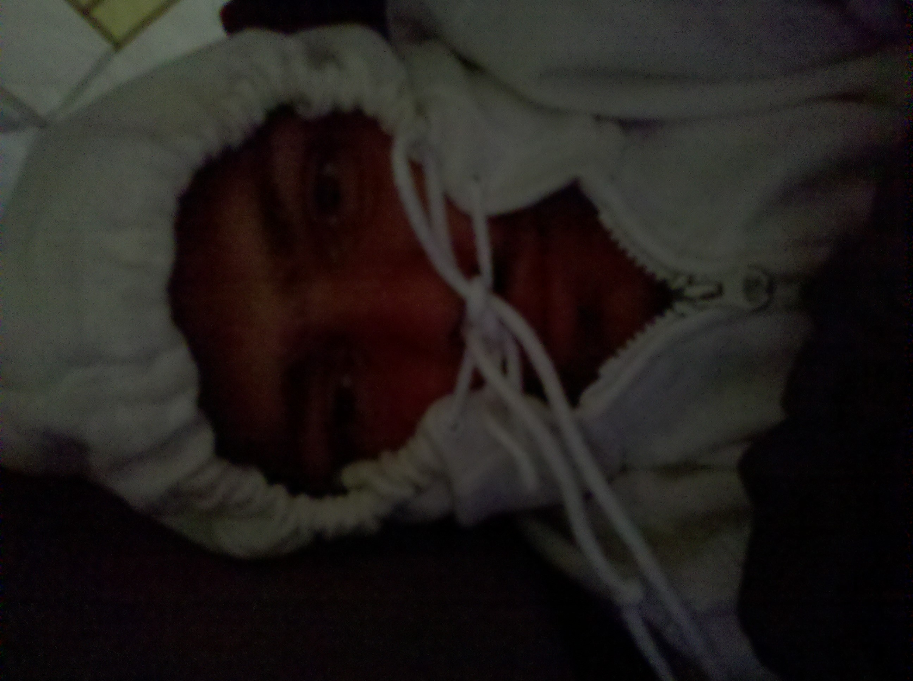

A Day At Nordhouse Dunes
Each day always starts with getting up,
except that, in the little wilderness you can't just roll out of bed.
At first, at best, you roll over,
to see where everything is at.
And although you can kind of lift yourself,
you can't really get up.
You sleep on the ground,
in a little tent.
That means you can,
only! stretch one limb at a time, and only a bit.
A successful decoupling and release,
requires great gymnastics.
The first order of the day,
is always fire, and a food item if you got one.
The trick to starting a fire,
is to start with tiny twigs that matches can light.
And then you add bigger, and bigger sticks,
it is absolutely required that you do a little dance.
The second order of the day, is adventure,
so you set off immediately.
Bring a day pack a water bottle,
if you are not sure where you are headed, follow the seagulls.
In my case there is this fantastic out of place bench,
right a top a dune.
One of the odd things about it is that,
it is about a foot too high off the ground, due to dune erosion.
To get atop of it, you must hoist a knee, and then kind of desperately roll in to it,
with an intense expression, and you realize that you haven't done that since your terrible twos.
Upon basking in the sun, the next order in the day,
is troublemaking.
On that particular day, I've noticed two weary travelers by the parking lot,
sniffing the leaves of a tree, that they were eagerly attempting to identify.
I briskly walked up to them and said,
"Oh my god, you guys, this is poison ivy, don't touch that."
One of the older ladies started making chicken noises at her friend,
and I waddled away.
To, my surprise, I discovered that this parking lot held a water pump,
I had no idea.
The fourth order of the day,
is the venerable search for a walking stick to continue the walk about.
This is no easy mater at Nordhouse as you can't miss the:
"THIS IS BEAR COUNTY" posters printed in Bold Comic Sans all over.
Any venture into the woods could potentially result in a dangerous standoff,
between a snarling man and a beast.
The fifth order of the day, at least for me,
is fossil hunting.
I have my collection right next to me as I write this,
though they all look like gibberish to me, some of those thing are prehistoric.
Fantastic!
It is a long walk to my favorite spot,
but it looks like a dune valley where you are surrounded by pretty tall dunes.
And here I cheerfully waddle back,
with a pocket full of rocks.
Back to my camp,
eyes still searching for fossils.
In the early afternoon it is good time to set off for the gas station,
here I usually grab a sausage and a couple of gallons of water, maybe a candy bar.
And the day slowly nears getting some more firewood,
sharpening a stick for the sausage, and waiting for the sunset to come.
At Twilight I prepare my Audio Book for the evening,
and crawl back into my fluffy sleeping bag.
